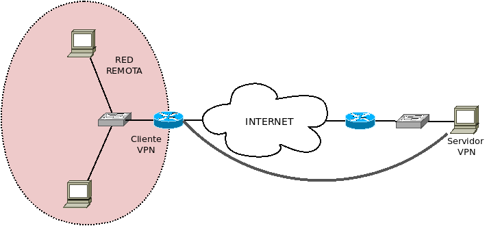

7.4. Redes VPN¶
Una red privada virtual (VPN) consiste en la conexión de dos nodos remotos, (por lo general separados por la internet pública), de manera que ambos se comporten como una única red local. Esto se logra estableciendo una conexión virtual punto a punto. Dado que la comunicación atraviesa internet la comunicación es cifrada y, además, se habilitan mecanismos para poder asegurar la identidad del otro lado.
Conceptualmente una VPN consiste en un protocolo encapsulador que se encarga de encapsular tráfico de otros protocolos, sin que estos aprecien, en realidad, que están siendo transportados por el primero. Así, el establecimiento de un túnel VPN genera interfaces virtuales en cliente y servidor que virtualmente comunican ambos cómo si realmente un cable los comunicara; de manera que para los protocolos encapsulados el viaje consiste en –aparentemente– circular entre estas interfaces.
7.4.1. Implementaciones¶
A diferencia de otros servicios como HTTP o SMTP en que existe un protocolo y diversas implementaciones del mismo que, obviamente por principio, son compatibles entre sí, VPN es más bien un concepto de encapsulamiento que admite implementarse mediante distintos protocolos. Esto provoca que la elección del servidor implique qué solo puedan usarse aquellos clientes que implementen el protocolo de éste.
- PPTP VPN
Protocolo desarrollado por Microsoft, que incluyen todos los sistemas Windows y la mayoría de dispositivos de red que son capaces de crear túneles VPN. Es rápido y consume pocos recursos, pero por cuestiones de seguridad se desaconseja su uso.
- IPSec VPN
Estos protocolos utilizan IPSec (o sea, un cifrado en la capa de red) para asegurar el tráfico. Un protocolo muy usado dentro de esta familia es IKE v2.
- SSL VPN
Protocolos VPN que usan el protocolo SSL de la capa de aplicación para lograr el cifrado. Pertenecen a esta familia, SSTP de Microsoft, y OpenVPN, software que trataremos en estos apuntes.
- VPN basada en Noise
Noise es un framework para construir protocolos seguros a medida para la aplicación que se desea crear. Esto, en teoría, permite crear protocolos VPN más eficientes[1] que los basados en SSL. Uno de estos VPN es Wireguard, desarrollado en torno a Linux y que se incluirá oficialmente dentro de su núcleo a partir de su versión 5.6. Dispone, además, de versiones para otros sistemas operativos como Windows o MacOs.
Ver también
Para más información puede echarse un ojo a este enlace de ExpressVPN o este otro de vpnMentor.
7.4.2. Generalidades¶
7.4.2.1. Definiciones¶
Como comienzo es conveniente establecer una serie de términos que usaremos a lo largo de este documento.
- Túnel VPN
Es la conexión punto a punto que se establece gracias al protocolo VPN.
- Servidor VPN
Es la máquina configurada para quedar perennemente a la espera de las peticiones de establecimiento de túneles VPN.
- Red local
Es la red en la que se encuentra el servidor VPN.
- Cliente VPN
Es la máquina configurada para solicitar en cualquier momento el establecimiento del túnel VPN.
- Red remota
Es la red a la que pertenece el cliente VPN.
7.4.2.2. Objetivos¶
Hay dos motivaciones principales, concurrentes o no, por las que se puede desear el uso de una VPN:
La más evidente de hacer participar a un equipo remoto o a toda una red remota en la red local de una organización.
Lograr el acceso indirecto a internet a través del servidor VPN con el fin a su vez de:
Preservar el anonimato gracias a acceder a internet a través de una IP distinta a la proporcionada por el ISP, lo cual supone que el dueño del servidor VPN se comprometa a no facilitar la IP real del cliente a terceros[2].
Nota
Hay algunos muy críticos con estos servicios de anonimización.
Burlar las restricciones de acceso a Internet:
Impuestas de forma global a un país, por ejemplo, por decisión judicial. Esto se lograría, simplemente, con que el servidor VPN se encontrara en un país distinto al del cliente.
Impuestas por el administrador de la red local en la que se encuentre el cliente. Por ejemplo, que utiliza sumideros DNS para evitar el acceso a ciertas páginas o que el cliente se sitúe en una red en la que se restringen algunos tipos de tráfico al exterior (muy comúnmente que sólo se permita tráfico HTTP y HTTPs). En este último caso, el establecimiento del túnel no es trivial e implica idear mecanismos que permitan hacer pasar al tráfico VPN por tráfico web. Los trataremos en el estudio práctico de OpenVPN y Wireguard.
Aunque no sean excluyentes, por lo general, una conexión VPN persigue o el primero o el segundo objetivo.
7.4.2.3. Tipos¶
Podemos hacer varias clasificaciones atendiendo a distintos criterios:
Según la naturaleza del cliente:
- Conexión sede-sede
Es la conexión permanente que se establece entre dos redes remotas en una de las cuales un dispositivo hace el papel de servidor y en la otra, otro el de cliente.
Por lo general, el túnel se establece entre los routers de frontera u otros dispositivos de la zona perimetral, porque esto facilita los encaminamientos de los equipos de ambas redes:
En estas conexiones se pretende lograr una interconexión bidireccional, esto es, que todos o varios dispositivos de una sede sean capaces de alcanzar todos o varios de la sede opuesta. Se corresponde con el primer objetivo referido en el epígrafe anterior.
- Acceso remoto o conexión sede-cliente móvil
Es la conexión que se establece entre una red y un dispositivo remoto individual, que en la jerga suele denominarse road warrior. En esta conexión la red dispone de un servidor VPN permanentemente accesible desde internet y el equipo remoto se conectará de modo intermitente a menudo desde distintas localizaciones.
Puede darse el caso que el interés del road warrior sea tener acceso a la red corporativa de la sede (primer objetivo):
Pero también que sea la de lograr acceso indirecto a internet (segundo objetivo):
- Acceso remoto compartido
Es la conexión establecida entre un servidor sin red corporativa asociada (o al menos irrelevante para la intención de la conexión VPN) y una red remota.
El caso podemos asimilarlo a uno de los dos anteriores dependiendo de cómo queramos verlo:
Si como el caso de un roadwarrior que en realidad no se mueve y comparte el túnel con la red remota a la que pertenece para que ésta acceda de forma indirecta a internet.
Si como el caso de una conexión sede-sede en que no hay ningún interés en interconectar las dos redes privadas, sino en que una red privada utilice un servidor remoto para acceso indirecto a internet.
Es pues un caso mixto y, en consecuencia, su configuración tomará partes de la configuración de uno y otro caso.
Según la capa de implementación:
- VPN en capa 2
Es aquella que establece el enlace en capa 2, por lo que ambos extremos del túnel se encontrarán en la misma red lógica.
- VPN en capa 3
Es aquella que establece el enlace en capa 3, por lo que cada extremo del túnel se encontrará en una red lógica distinta y el propio túnel constituirá una tercera.
Según el propietario del servidor VPN:
- Propia
Es aquella VPN cuyo cliente y servidor pertenecen a la misma organización y que, en consecuencia, es la organización la encargada de administrar ambos extremos.
- Comercial
Es el servicio que, previo pago, ofrece a sus clientes una conexión VPN a un servidor o, más comúnmente, a una variedad de servidores repartidos por todo el mundo. La finalidad de este servicio suele ser la de proporcionar acceso indirecto a Internet.
7.4.2.4. Encaminamiento¶
Antes de entrar en harina, es conveniente entender qué supone establecer un túnel VPN entre cliente y servidor. Cuando se arranca el servicio en el servidor, éste crea una interfaz virtual con una IP la cual es con la que virtualmente establece comunicación con los clientes. Por su parte, cuando un cliente negocia con éxito el establecimiento de un túnel, crea también una interfaz virtual con otra IP de la misma red. Por tanto, es como si virtualmente hubiéramos tendido un cable entre ambas máquinas y hubiéramos conectado con él las dos interfaces virtuales.
Es obvio que los paquetes, en realidad, seguirán saliendo y llegando por las interfaces reales y que cada máquina los enviará a las puertas de enlace respectivas. Pero toda esta realidad es absolutamente transparente para el usuario y el tráfico encapsulado, de manera que si el servidor tiene IP virtual 10.8.0.1 y el cliente IP virtual 10.8.0.2, para saber desde el cliente si el servidor está ahí basta con hacer:
$ ping 10.8.0.1
Es obvio también que, si el cliente quiere alcanzar equipos de la red local al servidor, lo tiene que hacer a través de la IP 10.8.0.1 del servidor y que si quiere que su comunicación con internet se haga a través del túnel VPN su puerta de enlace será directamente la 10.8.0.1[3]. Por tanto, las tablas de encaminamiento del cliente deben variar al establecer el túnel.
La entrada para la red del túnel VPN (la 10.8.0.0/24 en el ejemplo) se creará al crear la interfaz, pero cualquier otra debe añadirse mediante configuración del propio software VPN.
7.4.3. Estudio práctico¶
Estudiaremos dos implementaciones del concepto:
Además de implementar nosotros mismos el servidor, existen distintos servicios en internet (por lo general de pago) que proporcionan servicio VPN, esto es, servidores VPN dispuestos a lo largo del mundo a los que podemos conectar con un cliente a fin de burlar algún tipo de censura u ocultar la identidad, aunque el proveedor del servicio VPN sí sepa quién somos o, al menos, disponga de nuestra IP para que se pueda llegar a saber quién somos. VPNbook, con el que podemos usar OpenVPN, ofrece este servicio de forma gratuita; también ZPN, aunque limitado a una transferencia de 10GB al mes.
Notas al pie